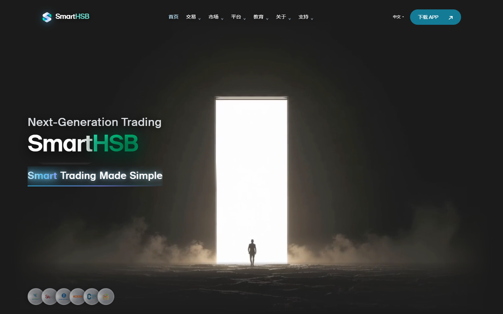

产品舞台
光集中在产品后方
右上柠檬绿、中央薄荷青、底部少量蓝。径向位置、透明度和色标均为新建议，原站首屏是背景图。
白色建立秩序，蓝绿柔光托起产品。
把复杂的市场信息，放回清晰的阅读层次。
参考 Minpilot 的空间、产品比例与精细边缘。下方展示三个关键场景，所有新增配方均为项目建议。
构图起点：75% 白/柔白 · 15% 浅蓝/浅薄荷 · 8% 绿青 · 2% 蓝与补色。不是原站像素统计。
原光门真实静帧 + 浅色内容衔接建议。保留原门、人物、文案、六徽章；原视频及动画源码不变。

原光门保留炭黑舞台，浅色从下一内容区开始。柔光不盖住门与徽章。当前 Canvas 依赖黑色遮罩与 screen 合成；全浅色光门仍需单独验证，不能通过换背景色完成。
参考关系：大产品、少量浮卡、柔光向白消散。布局、配方与按钮分工为项目建议。
一个 APP，让行情、分析与交易相连。
自选行情、财经日历与 Trading Central 研报，协助你建立自己的交易判断。
先用模拟账户练习，再选择适合你的账户。在移动端管理你的交易。
从模拟交易开始，先熟悉平台。
界面、报价和图表均为非实时展示示例。设备内沿用现有网页演示内容，不代表新 APP 皮肤。
文案区保持平静，柠檬绿、薄荷青与少量蓝光集中在产品后方。亮绿按钮用深墨字；模拟账户保留一处 2px 虹彩轮廓。手机取消分析小卡与循环浮动，让产品和说明完整落在文档流。
原四类市场、25 品种、名称与示例数据。可试用 Tab 方向键、Home / End 和外汇列表滚动。
贵金属 2 · 股指 5 · 外汇 17 · 能源 1 · 共 25 个品种
当前以列表展示全部 25 品种。启用脚本后可按四类市场切换。
关注黄金与白银，把握贵金属市场的变化。
2,384.70+0.45% ↗
代表品种 · 图表为展示示例
示例报价 · 非实时。图表为展示示例，不构成交易建议。交易规则、费用与风险请查阅交易品种及风险披露。
冰蓝划分区块，白色承载数据，深绿表达选中与正向值。标签同时提供边框与 ARIA 状态；涨跌保留正负号。外汇 17 项使用可聚焦滚动列表，不缩小文字、不省略品种。
下列色值有参考站依据；浅薄荷、冰蓝及具体用途为项目建议。每区块一个主强调色、最多一个辅助色。柔光与虹彩只承担装饰，不代替状态与条件。
#FFFFFF主阅读面与白色组件
#F6F6F6安静的信息背景
#F1FFF7选中底与模拟账户
#EEF5FF市场区与功能分层
#97F05E主按钮反馈与图形
#BFFF37主要行动与产品光源
#5BFFC3柔光与按下反馈
#01A66B品牌图形与辅助数据
#235DFE功能行动与键盘焦点
#00E5E0局部装饰光
#006C45链接与选中标签
#1D1D1F标题、关键数字
#606062说明与适用条件
#B7A2E3少量可选补光
#F36600极少量图形补色
右上柠檬绿、中央薄荷青、底部少量蓝。径向位置、透明度和色标均为新建议，原站首屏是背景图。
#BCFFF4 → #DDFF90，opacity .6 有原站依据。大舞台建议 blur 80px，平板 56px，手机 32px；本小样 36px。
五段色标有原站依据。白色内层保持字清晰，只用于少量重点轮廓；此处为材质小样。
默认静态。页首“动效演示”可开启样本；系统减少动效优先。原光门仍是静态实拍，未重写视频与时序。下表是项目建议，完整触发、缓动、延迟与降级说明见规范。
| 对象 | 建议参数 | 暂停与手机处理 | 本稿实现 |
|---|---|---|---|
| 标题与产品入场 | 600–800ms / 16–24px / 交错 60–100ms | 最终内容默认可见；减少动效即时显示 | 700ms / 20px 单元素样本 |
| 按钮 | 180–300ms / 箭头 4–6px | Hover 与 focus-visible 同等反馈；关闭动效保留颜色和焦点 | 220ms / 4px；未实现文字翻页 |
| 市场 Tab | 退出 120ms / 进入 280ms | 快速切换取消旧动画；减少动效即时更新 | 进入 280ms 淡入；退出待实施 |
| 模拟账户浮卡 | 8px / 完整往返 6s / ease-in-out | 一组循环，离屏及后台暂停；手机关闭 | 开启后仅桌面运行 |
| 轨道与渐变 | 轨道可选 30s；柔光静态 | 若采用轨道，替换浮卡循环；手机关闭 | 无轨道；全部渐变静态 |
| FAQ / 导航 | 原生语义；即时或短反馈 | Enter / Space、Escape、焦点清晰 | 原生 details；审阅菜单即时开关 |